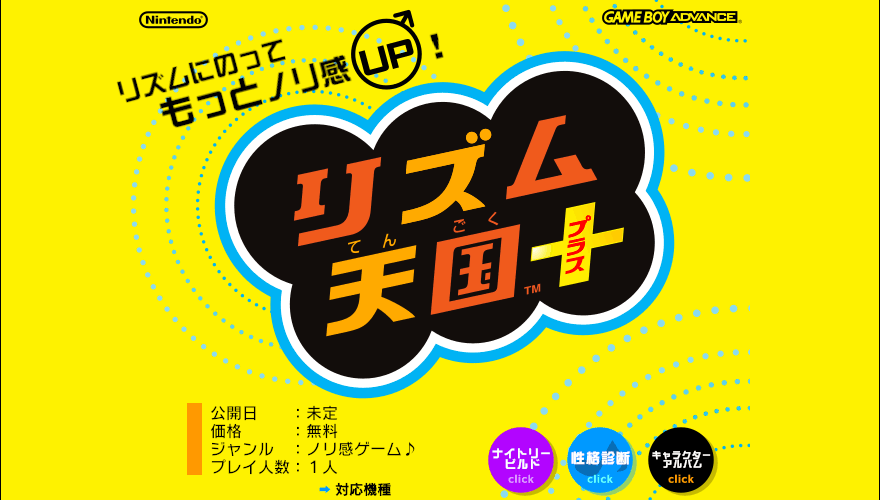
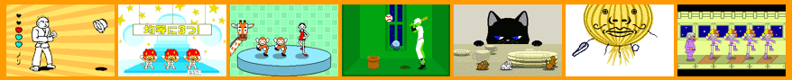

リズム天国リプラス

リズム天国リプラスは、リズム天国プラスを引き継いだプロジェクトです。ゲーム内の表記は「リズム天国プラス」のままです。
目の見えない人でも遊びやすくする工夫
元のプロジェクト「リズム天国プラス」
本家プロジェクト「Rhythm Heaven Advance」（英語のサイトへ移動します）
当プロジェクト及び当ウェブサイトは未完成です！
各箇所で変更が行われる可能性があります。予めご了承ください。
